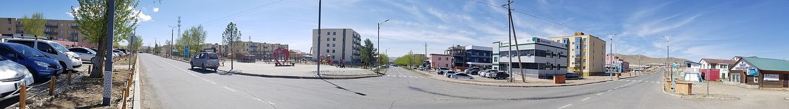
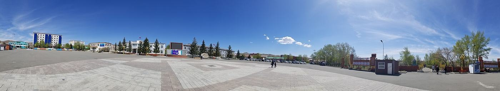

Бидний тухай
2014 оноос хойш Төв аймгийн хөгжлийн бэрхшээлтэй иргэдийн эрх, оролцоо, боломжийн төлөө ажиллаж байна.

Эрхэм зорилго ба алсын хараа
Эрхэм зорилго
Хөгжлийн бэрхшээлтэй иргэн бүрийг нийгмийн бүрэн эрхт, идэвхтэй гишүүн болгох; хөдөлмөр эрхлэлт, боловсрол, мэдээлэл, нийгмийн оролцооны тэгш боломжоор хангах.
Алсын хараа
Хөгжлийн бэрхшээл нь оролцоог хязгаарлахгүй, харин нийгэм бүрэн дэмжиж, хүн бүр өөрийн чадвараа нээж хөгжүүлэх боломжтой Төв аймаг.
Үнэт зүйлс
- Тэгш эрх — хөгжлийн бэрхшээлтэй иргэн бүр нийгмийн бүх салбарт тэгш оролцох эрхтэй.
- Хүртээмж — мэдээлэл, орчин, үйлчилгээ бүр хүн бүрт хүртээмжтэй байх ёстой.
- Оролцоо — хөгжлийн бэрхшээлтэй иргэдийг өөрсдийн амьдрал, шийдвэрт оролцуулах.
- Хүндэтгэл — хүн бүрийн нэр төр, сонголт, дуу хоолойг хүндэтгэх.
- Ил тод байдал — үйл ажиллагаа, санхүүгээ ил тод, хариуцлагатай хөтлөх.
- Тогтвортой байдал — богино хугацааны тусламж биш, урт хугацааны чадавх бүрдүүлэх.
Замнал
-
2014
Холбоо байгуулагдав
Улсын бүртгэлийн 8136629 дугаартайгаар албан ёсоор бүртгэгдэж, Төв аймгийн хөгжлийн бэрхшээлтэй иргэдийн дуу хоолой болж эхлэв.
-
2021
Удирдлага шинэчлэгдэв
Удирдлагын зөвлөлийн дарга 2021 оны 11 дүгээр сарын 3-нд шинэчлэгдэв.
-
2023
«Аз жаргалын өргөө» төвд байртай болов
7 дугаар сард төв нээгдэж, холбоо төвд үйл ажиллагааны байртай болсон. 12 дугаар сард «Хөгжлийн бэрхшээл ба тэгш хүртээмж» чуулга уулзалтыг хамтран зохион байгуулав.
-
2024
Удирдлагын зөвлөлийн дарга шинэчлэгдэв
Мажаа Эрдэнэжав 2024 оны 8 дугаар сарын 16-наас УЗ-ийн даргаар ажиллаж байна.
-
2026 — одоо
Үйл ажиллагаагаа үргэлжлүүлж байна
Хөдөлмөр эрхлэлт, нийгмийн оролцоо, мэдээлэл ба сургалтын чиглэлээр ажлаа үргэлжлүүлж байна.

Бүртгэлийн мэдээлэл
- Байгууллагын нэр
- Төв аймгийн хөгжлийн бэрхшээлтэй иргэдийн холбоо
- Улсын бүртгэлийн дугаар
- 8136629
- Хэлбэр
- Холбоо /ГҮТББ/
- Төрөл
- Ашгийн төлөө бус
- Байгууллагдсан
- 2014-04-17
- Бүртгэлтэй хаяг
- Төв аймаг, Зуунмод сум, 2-р баг, Ланс 11-15
- Үйл ажиллагааны чиглэл
- 7820 · 8211 · 9499
- УЗ-ийн дарга
- Мажаа Эрдэнэжав (2024-08-16-наас)
Удирдлага
Мажаа Эрдэнэжав
Удирдлагын зөвлөлийн дарга — 2024-08-16-наас
Холбооны байршил
Холбоо нь Төв аймгийн Зуунмод суманд бүртгэлтэй бөгөөд 2023 оноос хойш «Аз жаргалын өргөө» төвд үйл ажиллагааны байртай.
